Create an ordination biplot using ggplot2 including options for selecting axes, group color aesthetics, and selection of variables to plot.
ggord(...)
# Default S3 method
ggord(
obs,
vecs,
axes = c("1", "2"),
grp_in = NULL,
cols = NULL,
facet = FALSE,
nfac = NULL,
addpts = NULL,
obslab = FALSE,
ptslab = FALSE,
ellipse = TRUE,
ellipse_pro = 0.95,
poly = TRUE,
polylntyp = "solid",
hull = FALSE,
arrow = 0.4,
labcol = "black",
veccol = "black",
vectyp = "solid",
veclsz = 0.5,
ext = 1.2,
repel = FALSE,
vec_ext = 1,
vec_lab = NULL,
size = 4,
sizelab = NULL,
addsize = size/2,
addcol = "blue",
addpch = 19,
txt = 4,
alpha = 1,
alpha_el = 0.4,
xlims = NULL,
ylims = NULL,
var_sub = NULL,
coord_fix = TRUE,
parse = TRUE,
grp_title = "Groups",
force = 1,
max.overlaps = 10,
exp = c(0, 0),
...
)
# S3 method for class 'PCA'
ggord(ord_in, grp_in = NULL, axes = c("1", "2"), ...)
# S3 method for class 'MCA'
ggord(ord_in, grp_in = NULL, axes = c("1", "2"), ...)
# S3 method for class 'mca'
ggord(ord_in, grp_in = NULL, axes = c("1", "2"), ...)
# S3 method for class 'acm'
ggord(ord_in, grp_in = NULL, axes = c("1", "2"), ...)
# S3 method for class 'prcomp'
ggord(ord_in, grp_in = NULL, axes = c("1", "2"), ...)
# S3 method for class 'princomp'
ggord(ord_in, grp_in = NULL, axes = c("1", "2"), ...)
# S3 method for class 'metaMDS'
ggord(ord_in, grp_in = NULL, axes = c("1", "2"), ...)
# S3 method for class 'lda'
ggord(ord_in, grp_in = NULL, axes = c("1", "2"), ...)
# S3 method for class 'pca'
ggord(ord_in, grp_in = NULL, axes = c("1", "2"), ...)
# S3 method for class 'coa'
ggord(ord_in, grp_in = NULL, axes = c("1", "2"), ...)
# S3 method for class 'ca'
ggord(ord_in, grp_in = NULL, axes = c("1", "2"), ...)
# S3 method for class 'ppca'
ggord(ord_in, grp_in = NULL, axes = NULL, ...)
# S3 method for class 'rda'
ggord(ord_in, grp_in = NULL, axes = c("1", "2"), ...)
# S3 method for class 'capscale'
ggord(ord_in, grp_in = NULL, axes = c("1", "2"), ...)
# S3 method for class 'dbrda'
ggord(ord_in, grp_in = NULL, axes = c("1", "2"), ...)
# S3 method for class 'cca'
ggord(ord_in, grp_in = NULL, axes = c("1", "2"), ...)
# S3 method for class 'dpcoa'
ggord(ord_in, grp_in = NULL, axes = c("1", "2"), ...)Arguments
- ...
arguments passed to or from other methods
- obs
matrix or data frame of axis scores for each observation
- vecs
matrix or data frame of axis scores for each variable
- axes
chr string indicating which axes to plot
- grp_in
vector of grouping objects for the biplot, must have the same number of observations as the original matrix used for the ordination
- cols
chr string of optional colors for
grp_in- facet
logical indicating if plot is faceted by groups in
grp_in- nfac
numeric indicating number of columns if
facet = TRUE- addpts
optional matrix or data.frame of additional points if constrained ordination is used (e.g., species locations in cca, rda)
- obslab
logical if the row names for the observations in
obsare plotted rather than points- ptslab
logical if the row names for the additional points (
addpts) in constrained ordination are plotted as text- ellipse
logical if confidence ellipses are shown for each group, method from the ggbiplot package, at least one group must have more than two observations
- ellipse_pro
numeric indicating confidence value for the ellipses
- poly
logical if confidence ellipses are filled polygons, otherwise they are shown as empty ellipses
- polylntyp
chr string for line type of polygon outlines if
poly = FALSE, options aretwodash,solid,longdash,dotted,dotdash,dashed,blank, or alternatively the grouping vector fromgrp_incan be used- hull
logical if convex hull is drawn around points or groups if provided
- arrow
numeric indicating length of the arrow heads on the vectors, use
NULLto suppress arrows- labcol
chr string for color of text labels on vectors
- veccol
chr string for color of vectors
- vectyp
chr string for line type of vectors, options are
twodash,solid,longdash,dotted,dotdash,dashed,blank- veclsz
numeric for line size on vectors
- ext
numeric indicating scalar distance of the labels from the arrow ends
- repel
logical if overlapping text labels on vectors use
geom_text_repelfrom the ggrepel package- vec_ext
numeric indicating a scalar extension for the ordination vectors
- vec_lab
list of optional labels for vectors, defaults to names from input data. The input list must be named using the existing variables in the input data. Each element of the list will have the desired name change.
- size
numeric indicating size of the observation points or a numeric vector equal in length to the rows in the input data
- sizelab
chr string indicating an alternative legend title for size
- addsize
numeric indicating size of the species points if addpts is not
NULL- addcol
numeric indicating color of the species points if addpts is not
NULL- addpch
numeric indicating point type of the species points if addpts is not
NULL- txt
numeric indicating size of the text labels for the vectors, use
NULLto suppress labels- alpha
numeric transparency of points and ellipses from 0 to 1
- alpha_el
numeric transparency for confidence ellipses, also applies to filled convex hulls
- xlims
two numeric values indicating x-axis limits
- ylims
two numeric values indicating y-axis limits
- var_sub
chr string indcating which labels to show. Regular expression matching is used.
- coord_fix
logical indicating fixed, equal scaling for axes
- parse
logical indicating if text labels are parsed
- grp_title
chr string for legend title
- force
numeric passed to
forceargument ingeom_text_repelfrom the ggrepel package- max.overlaps
numeric passed to
max.overlapsargument ingeom_text_repelfrom the ggrepel package- exp
numeric of length two for expanding x and y axes, passed to
scale_y_continuousandscale_y_continuous- ord_in
input ordination object
Value
A ggplot object that can be further modified
Details
Explained variance of axes for triplots are constrained values.
See also
Examples
library(ggplot2)
# principal components analysis with the iris data set
# prcomp
ord <- prcomp(iris[, 1:4])
p <- ggord(ord, iris$Species)
p
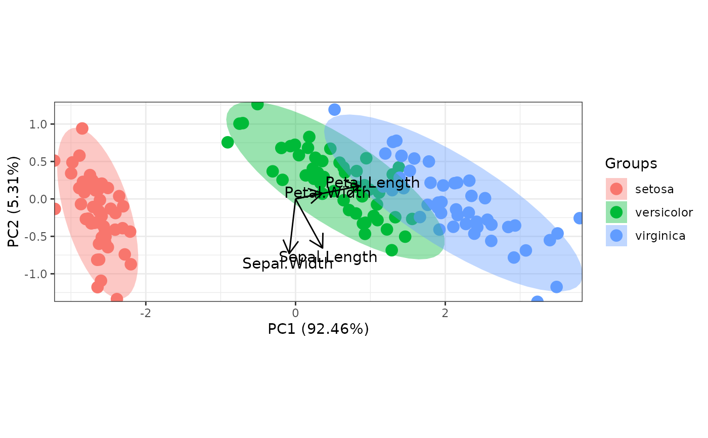
p <- ggord(ord, iris$Species, cols = c('purple', 'orange', 'blue'))
p
p + scale_shape_manual('Groups', values = c(1, 2, 3))
#> Scale for shape is already present.
#> Adding another scale for shape, which will replace the existing scale.
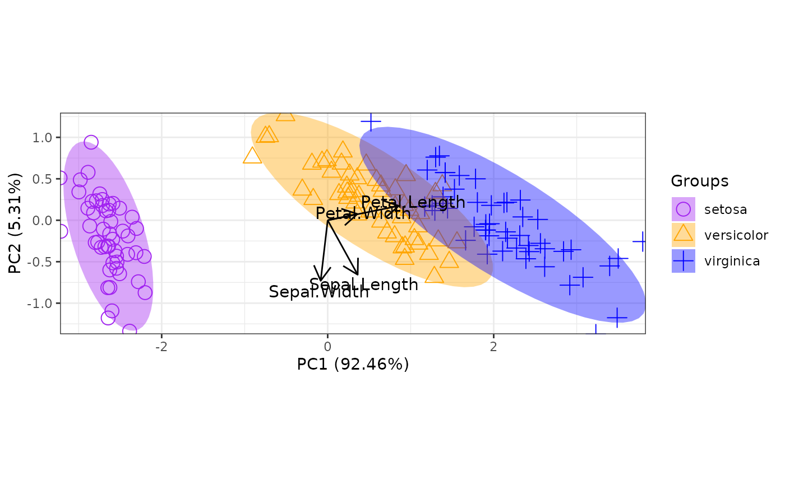
p + theme_classic()
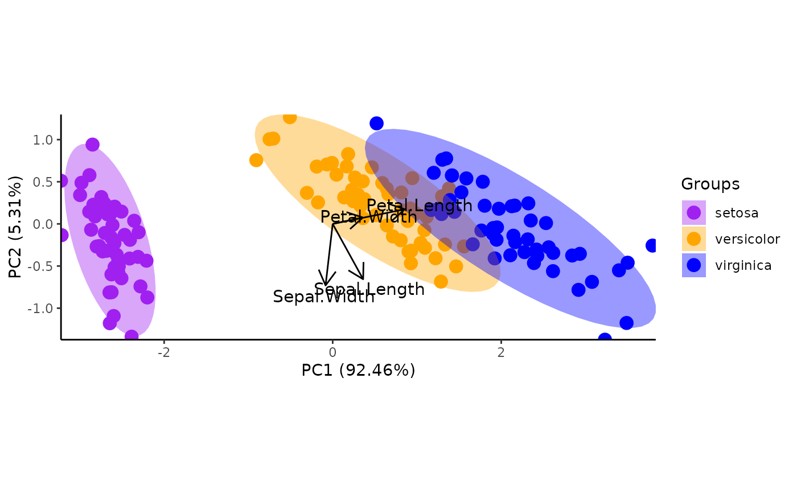
p + theme(legend.position = 'top')
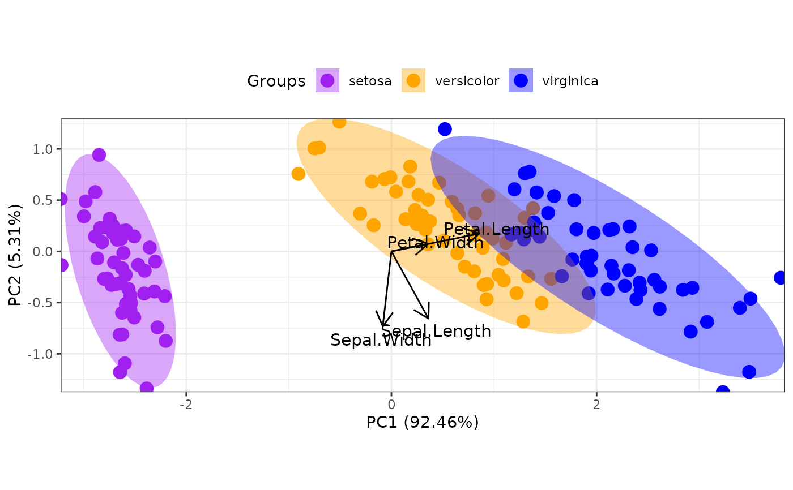
# change the vector labels with vec_lab
new_lab <- list(Sepal.Length = 'SL', Sepal.Width = 'SW', Petal.Width = 'PW',
Petal.Length = 'PL')
p <- ggord(ord, iris$Species, vec_lab = new_lab)
p
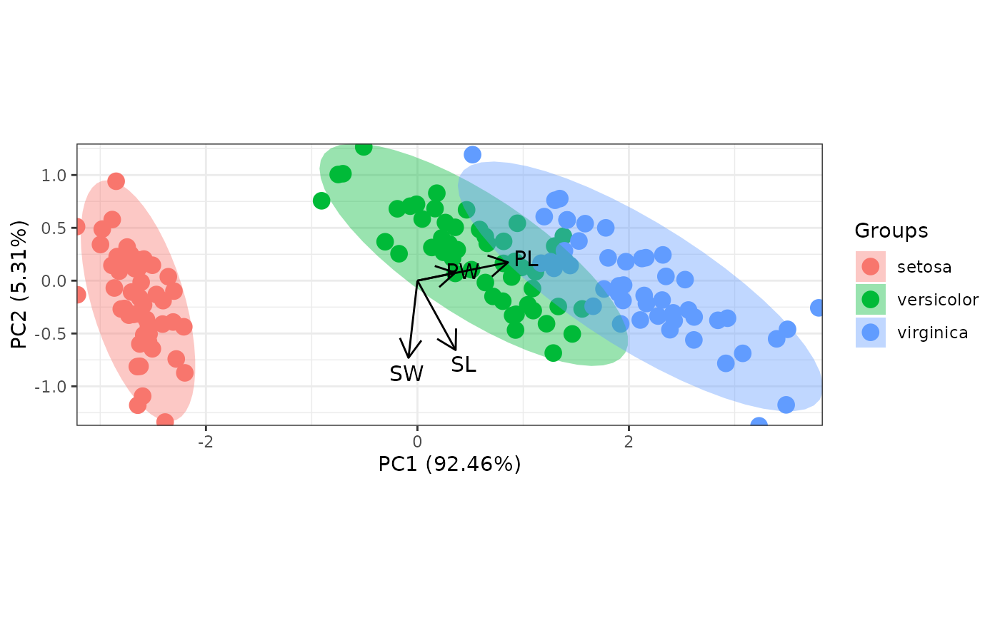
# faceted by group
p <- ggord(ord, iris$Species, facet = TRUE, nfac = 3)
p
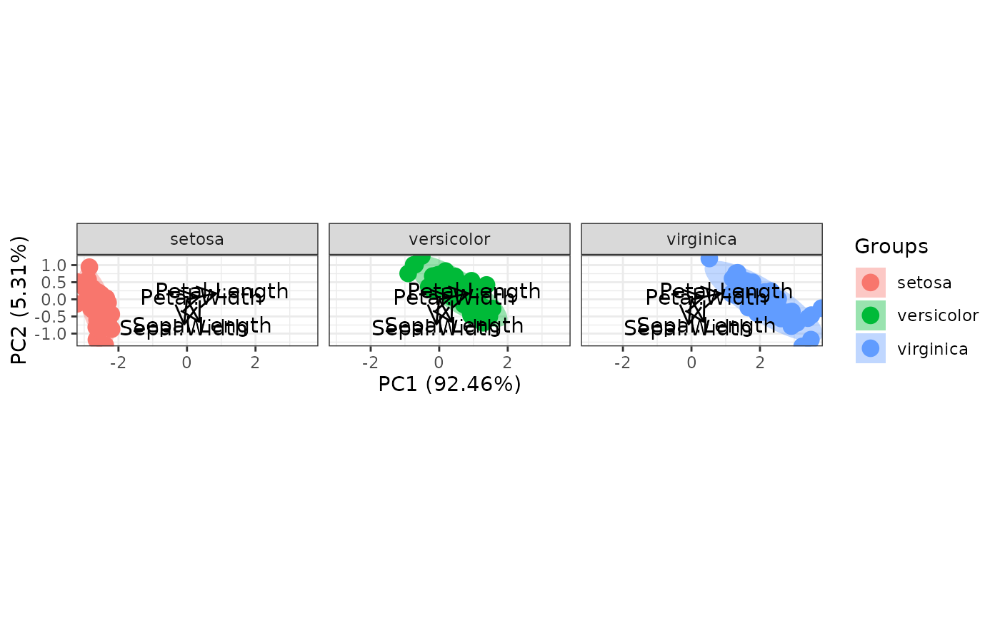
# principal components analysis with the iris dataset
# princomp
ord <- princomp(iris[, 1:4])
ggord(ord, iris$Species)
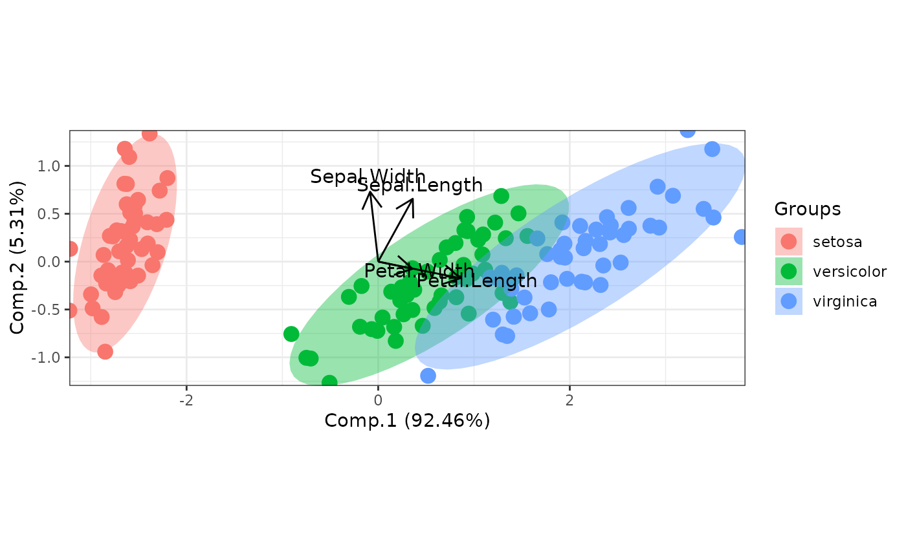
# principal components analysis with the iris dataset
# PCA
library(FactoMineR)
ord <- PCA(iris[, 1:4], graph = FALSE)
ggord(ord, iris$Species)
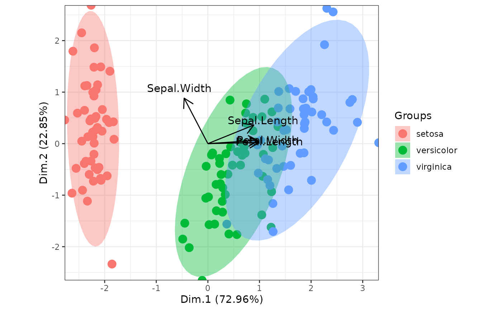
# principal components analysis with the iris dataset
# dudi.pca
library(ade4)
#>
#> Attaching package: ‘ade4’
#> The following object is masked from ‘package:FactoMineR’:
#>
#> reconst
ord <- dudi.pca(iris[, 1:4], scannf = FALSE, nf = 4)
ggord(ord, iris$Species)
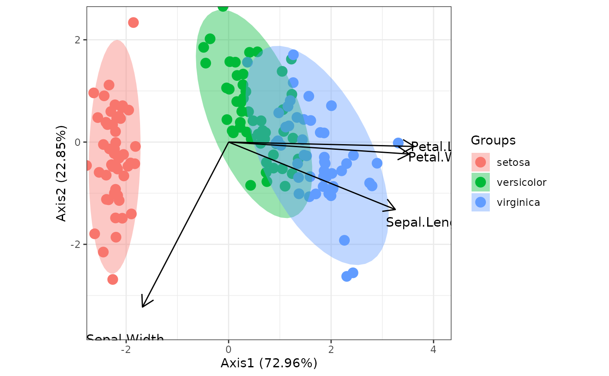
# multiple correspondence analysis with the tea dataset
# MCA
data(tea, package = 'FactoMineR')
tea <- tea[, c('Tea', 'sugar', 'price', 'age_Q', 'sex')]
ord <- MCA(tea[, -1], graph = FALSE)
ggord(ord, tea$Tea, parse = FALSE) # use parse = FALSE for labels with non alphanumeric characters
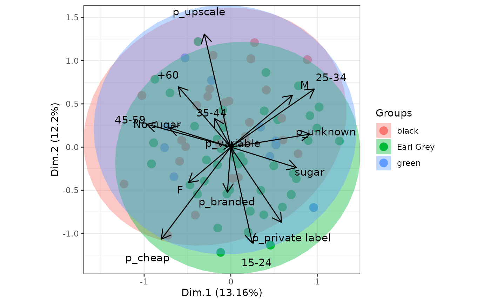
# multiple correspondence analysis with the tea dataset
# mca
library(MASS)
ord <- mca(tea[, -1])
ggord(ord, tea$Tea, parse = FALSE) # use parse = FALSE for labels with non alphanumeric characters
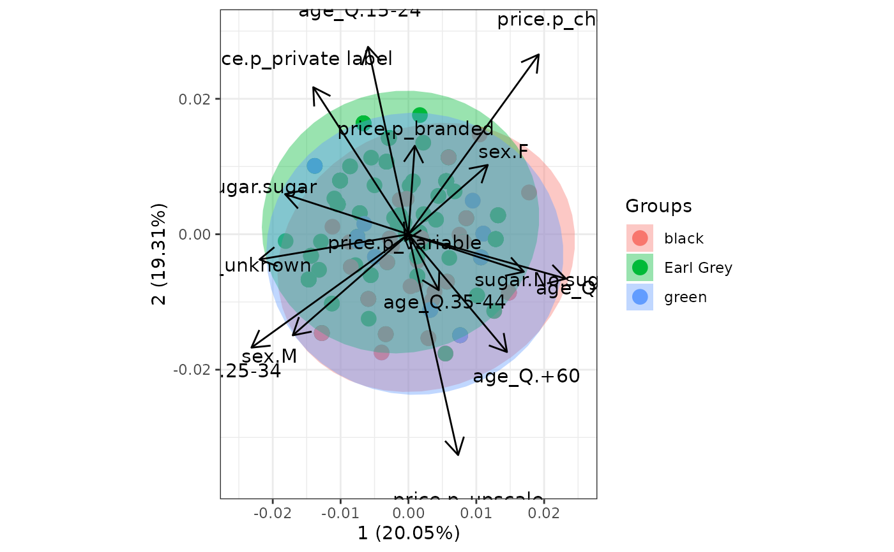
# multiple correspondence analysis with the tea dataset
# acm
ord <- dudi.acm(tea[, -1], scannf = FALSE)
ggord(ord, tea$Tea, parse = FALSE) # use parse = FALSE for labels with non alphanumeric characters
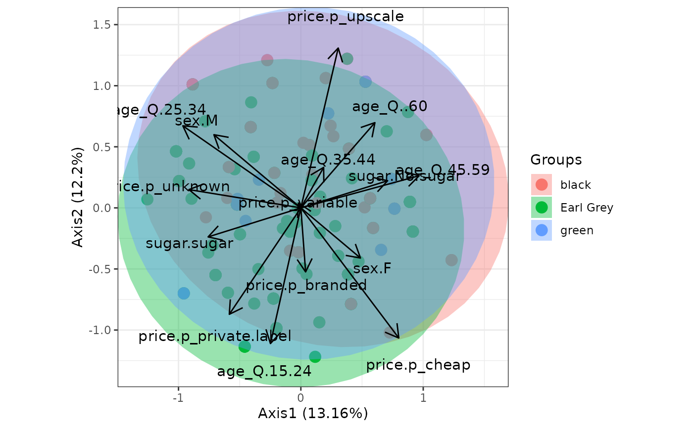
# nonmetric multidimensional scaling with the iris dataset
# metaMDS
library(vegan)
#> Loading required package: permute
#> Loading required package: lattice
#> This is vegan 2.6-6.1
ord <- metaMDS(iris[, 1:4])
#> Run 0 stress 0.03775523
#> Run 1 stress 0.03775523
#> ... Procrustes: rmse 8.400153e-06 max resid 5.751231e-05
#> ... Similar to previous best
#> Run 2 stress 0.06026065
#> Run 3 stress 0.04709622
#> Run 4 stress 0.05266426
#> Run 5 stress 0.05003076
#> Run 6 stress 0.0377553
#> ... Procrustes: rmse 1.477695e-05 max resid 3.985016e-05
#> ... Similar to previous best
#> Run 7 stress 0.04709622
#> Run 8 stress 0.03775522
#> ... New best solution
#> ... Procrustes: rmse 8.776142e-06 max resid 9.261835e-05
#> ... Similar to previous best
#> Run 9 stress 0.04804007
#> Run 10 stress 0.0377552
#> ... New best solution
#> ... Procrustes: rmse 6.503036e-06 max resid 3.118648e-05
#> ... Similar to previous best
#> Run 11 stress 0.05537357
#> Run 12 stress 0.03775522
#> ... Procrustes: rmse 1.139359e-05 max resid 5.060113e-05
#> ... Similar to previous best
#> Run 13 stress 0.05289952
#> Run 14 stress 0.05316986
#> Run 15 stress 0.03775522
#> ... Procrustes: rmse 8.41367e-06 max resid 3.726274e-05
#> ... Similar to previous best
#> Run 16 stress 0.04367518
#> Run 17 stress 0.04367527
#> Run 18 stress 0.04367517
#> Run 19 stress 0.03775524
#> ... Procrustes: rmse 1.444315e-05 max resid 6.202138e-05
#> ... Similar to previous best
#> Run 20 stress 0.04713731
#> *** Best solution repeated 4 times
ggord(ord, iris$Species)
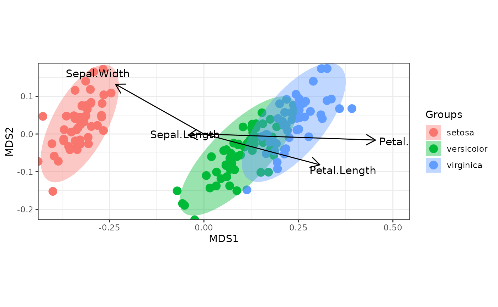
# linear discriminant analysis
# example from lda in MASS package
ord <- lda(Species ~ ., iris, prior = rep(1, 3)/3)
ggord(ord, iris$Species)
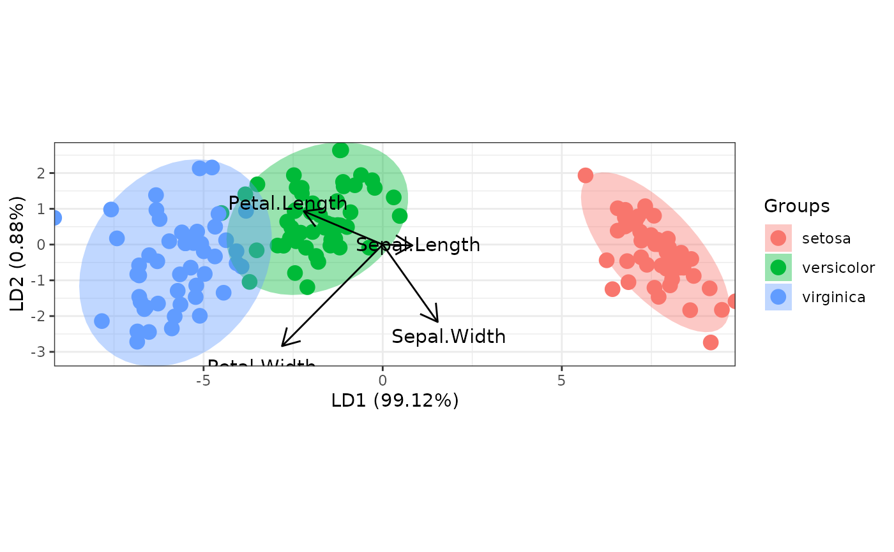
# correspondence analysis
# dudi.coa
ord <- dudi.coa(iris[, 1:4], scannf = FALSE, nf = 4)
ggord(ord, iris$Species)
# correspondence analysis
library(ca)
ord <- ca(iris[, 1:4])
ggord(ord, iris$Species)
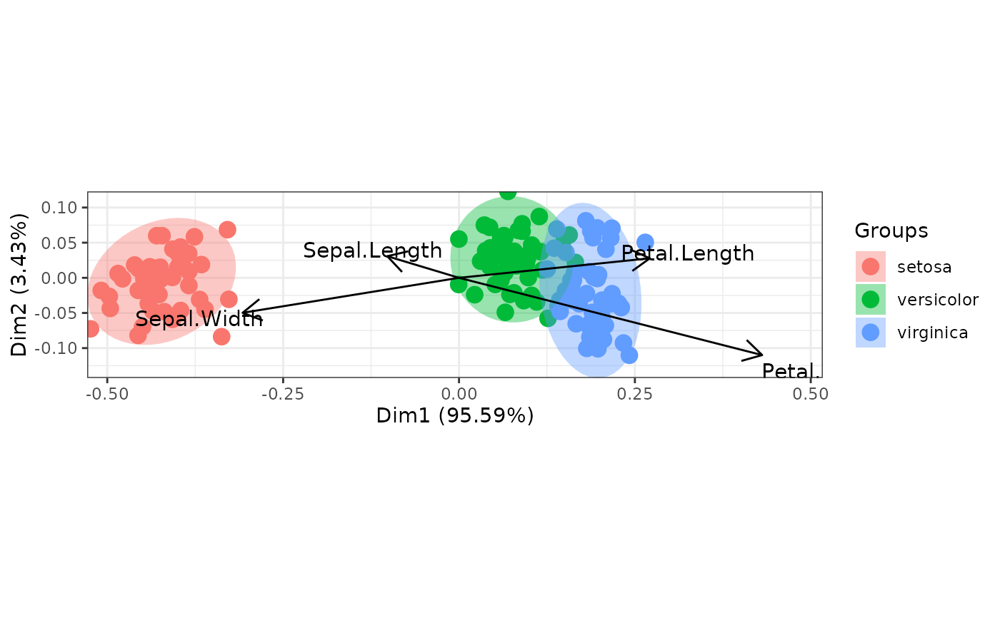
# double principle coordinate analysis (DPCoA)
library(ade4)
data(ecomor)
grp <- rep(c("Bu", "Ca", "Ch", "Pr"), each = 4) # sample groups
dtaxo <- dist.taxo(ecomor$taxo) # taxonomic distance between species
ord <- dpcoa(data.frame(t(ecomor$habitat)), dtaxo, scan = FALSE, nf = 2)
ggord(ord, grp_in = grp, ellipse = FALSE, arrow = 0.2, txt = 3)
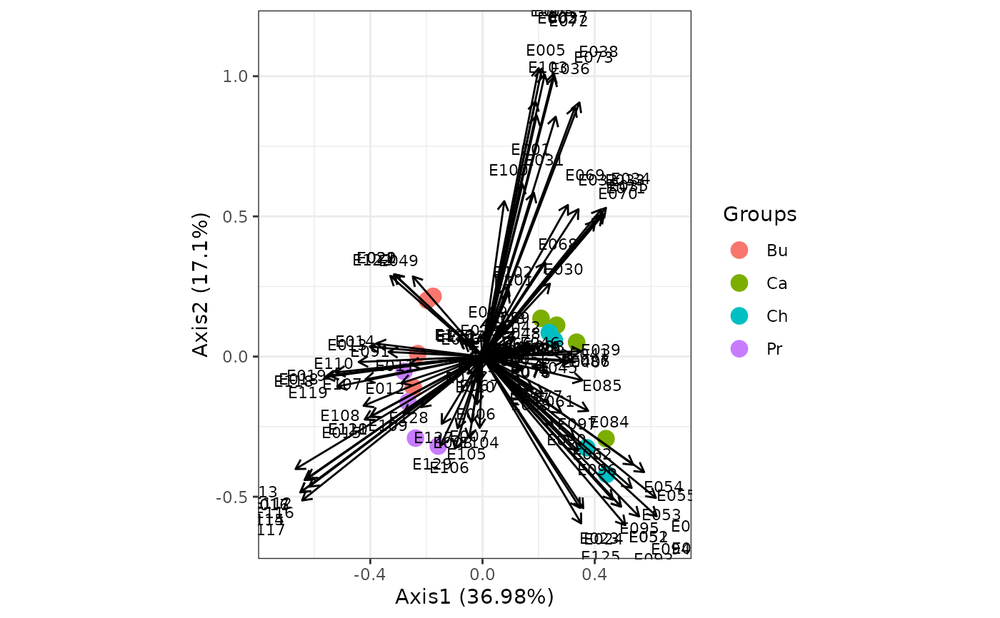
# phylogenetic PCA
# ppca
library(adephylo)
library(phylobase)
library(ape)
#>
#> Attaching package: ‘ape’
#> The following object is masked from ‘package:phylobase’:
#>
#> edges
data(lizards)
# example from help file, adephylo::ppca
# original example from JOMBART ET AL 2010
# build a tree and phylo4d object
liz.tre <- read.tree(tex=lizards$hprA)
liz.4d <- phylobase::phylo4d(liz.tre, lizards$traits)
# remove duplicated populations
liz.4d <- phylobase::prune(liz.4d, c(7,14))
# correct labels
lab <- c("Pa", "Ph", "Ll", "Lmca", "Lmcy", "Phha", "Pha",
"Pb", "Pm", "Ae", "Tt", "Ts", "Lviv", "La", "Ls", "Lvir")
tipLabels(liz.4d) <- lab
# remove size effect
dat <- tdata(liz.4d, type="tip")
dat <- log(dat)
newdat <- data.frame(lapply(dat, function(v) residuals(lm(v~dat$mean.L))))
rownames(newdat) <- rownames(dat)
tdata(liz.4d, type="tip") <- newdat[,-1] # replace data in the phylo4d object
# create ppca
liz.ppca <- ppca(liz.4d,scale=FALSE,scannf=FALSE,nfposi=1,nfnega=1, method="Abouheif")
# plot
ggord(liz.ppca)
#> Error in summary.ppca(ord_in, printres = FALSE): object 'liz.4d' not found
# distance-based redundancy analysis
# dbrda from vegan
data(varespec)
data(varechem)
ord <- dbrda(varespec ~ N + P + K + Condition(Al), varechem, dist = "bray")
ggord(ord)
 ######
# triplots
# redundancy analysis
# rda from vegan
ord <- rda(varespec, varechem)
ggord(ord)
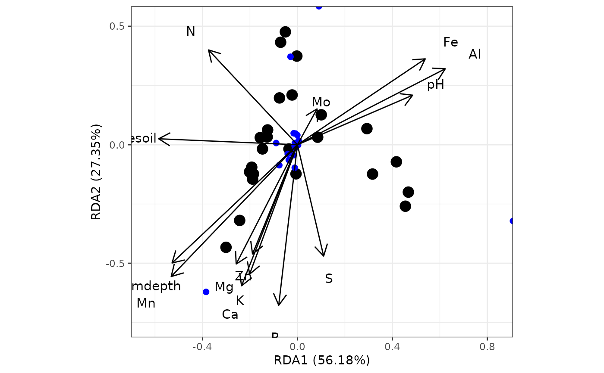
# distance-based redundancy analysis
# capscale from vegan
ord <- capscale(varespec ~ N + P + K + Condition(Al), varechem, dist = "bray")
ggord(ord)
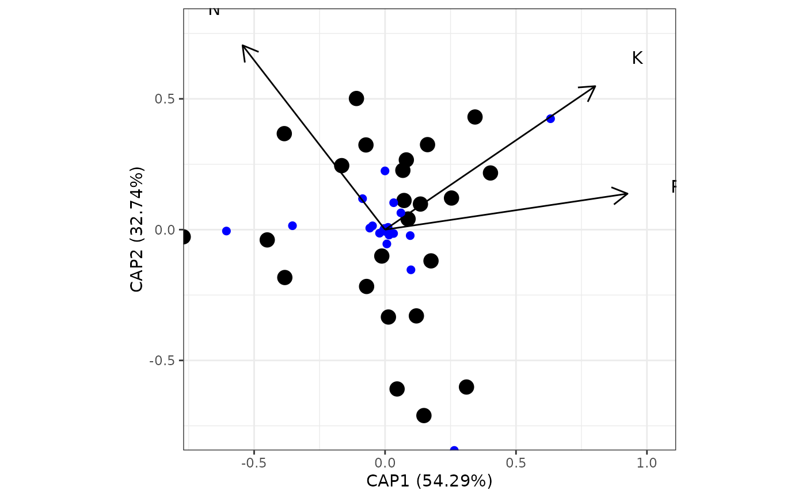
# canonical correspondence analysis
# cca from vegan
ord <- cca(varespec, varechem)
ggord(ord)
# species points as text
# suppress site points
ggord(ord, ptslab = TRUE, size = NA, addsize = 5, parse = TRUE)
#> Warning: Removed 24 rows containing missing values or values outside the scale range
#> (`geom_point()`).
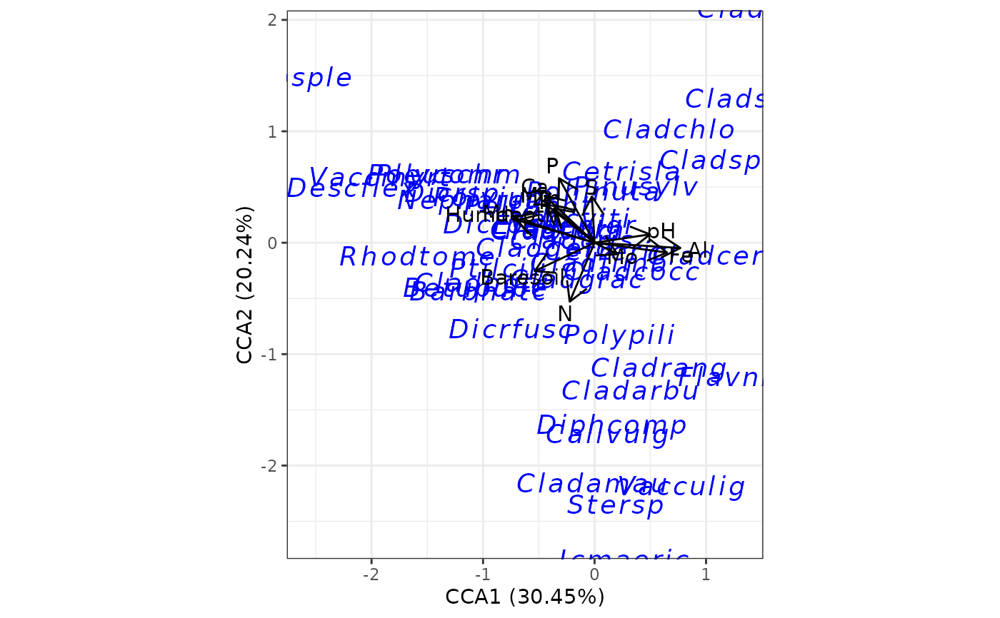
######
# triplots
# redundancy analysis
# rda from vegan
ord <- rda(varespec, varechem)
ggord(ord)
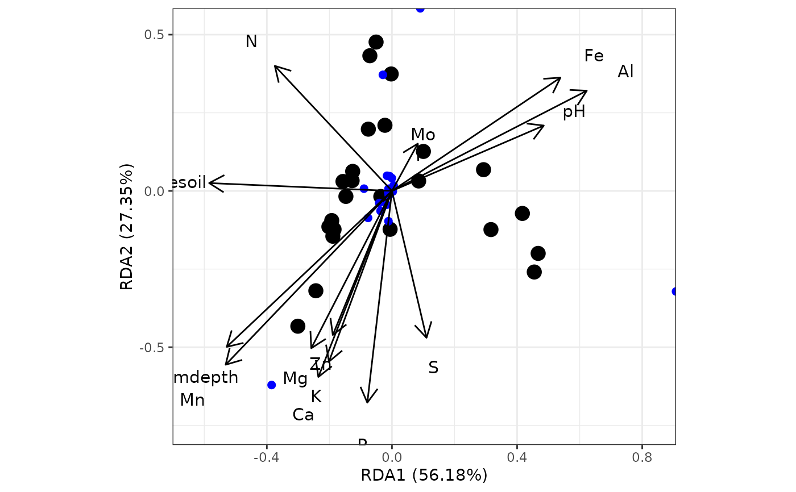
# distance-based redundancy analysis
# capscale from vegan
ord <- capscale(varespec ~ N + P + K + Condition(Al), varechem, dist = "bray")
ggord(ord)
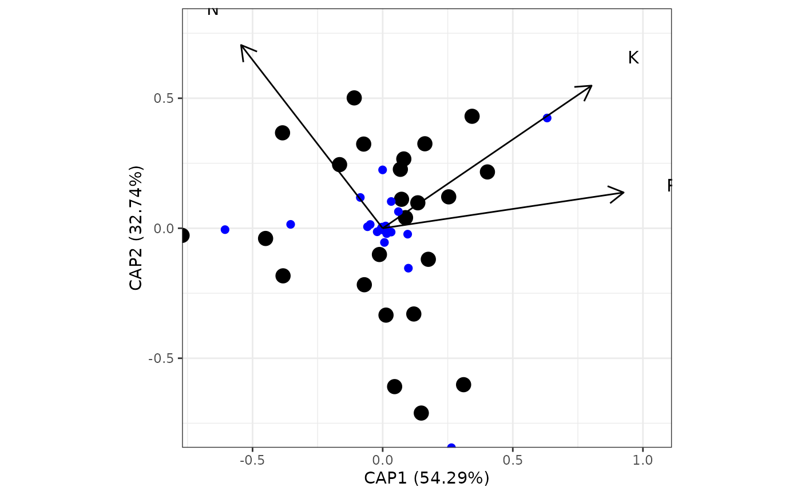
# canonical correspondence analysis
# cca from vegan
ord <- cca(varespec, varechem)
ggord(ord)
# species points as text
# suppress site points
ggord(ord, ptslab = TRUE, size = NA, addsize = 5, parse = TRUE)
#> Warning: Removed 24 rows containing missing values or values outside the scale range
#> (`geom_point()`).
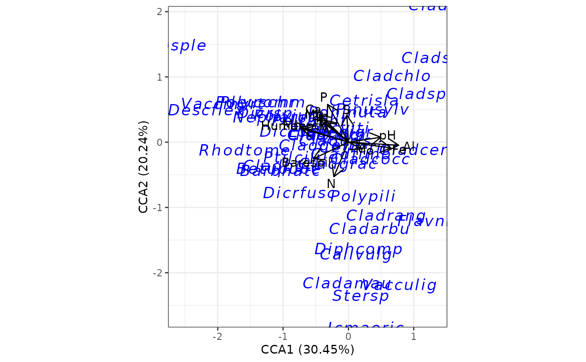